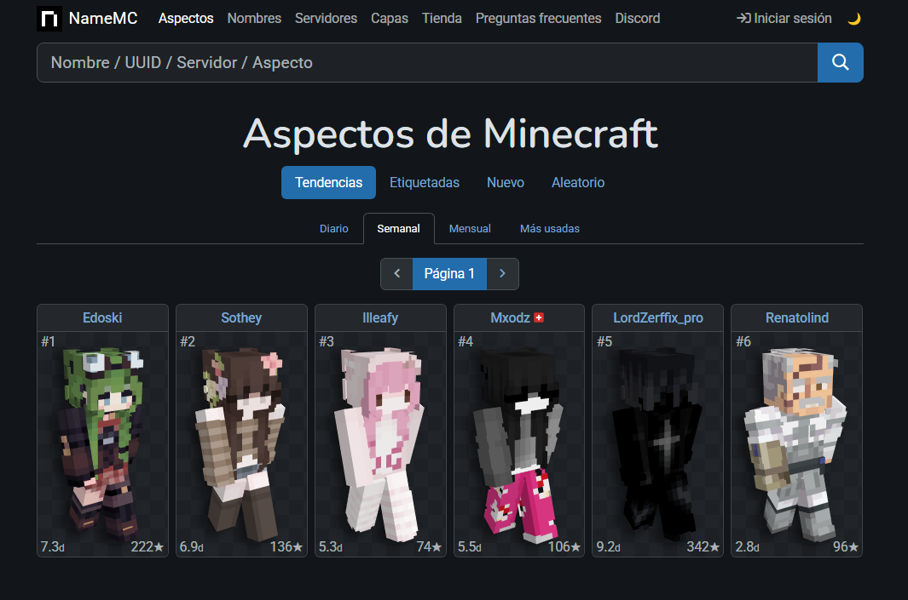
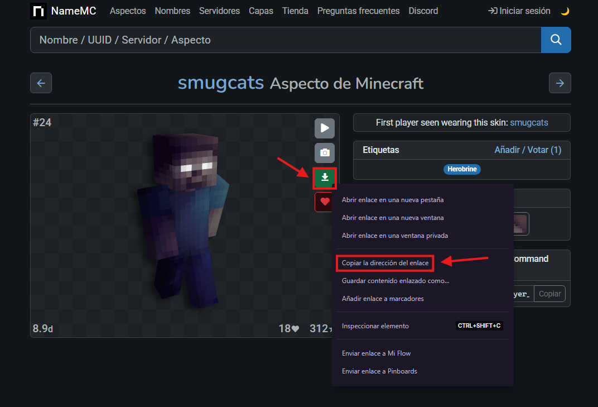
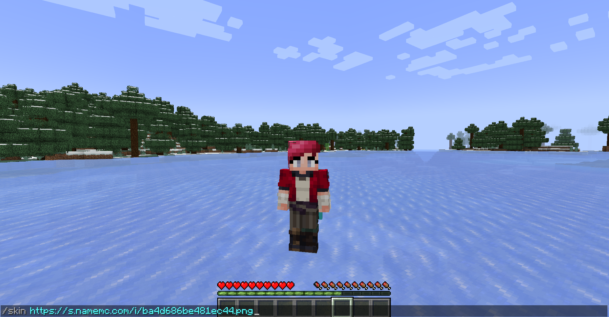
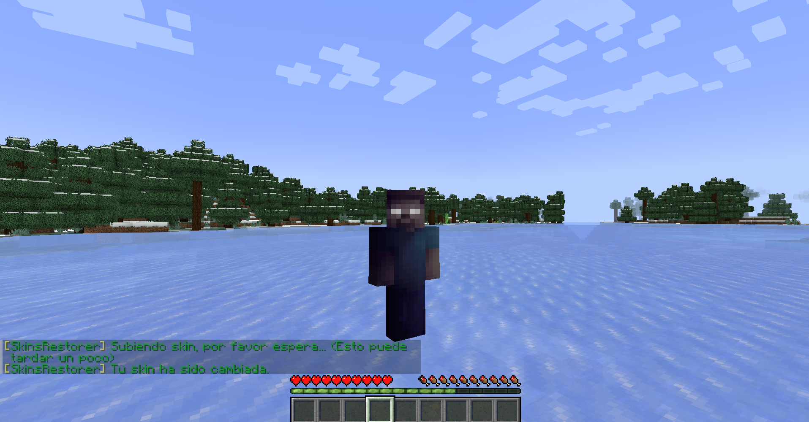

¿Como colocarte tu skin preferida dentro del servidor?
Paso 1.


Para buscar skins de minecraft puedes entrar en NameMC y una vez que hayas encontrado tu favorita, en el botón de descarga damos click derecho y seleccionamos la opcion de "copiar la dirección del enlace".
Paso 2.


Dentro del servidor abrimos el chat, escribimos el comando "/skin" y pegamos la direccion copiada, introduciendo el comando la skin cambiará a la deseada.